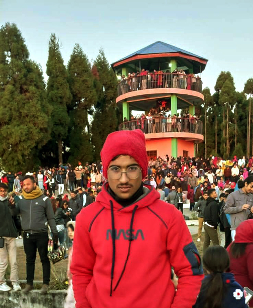
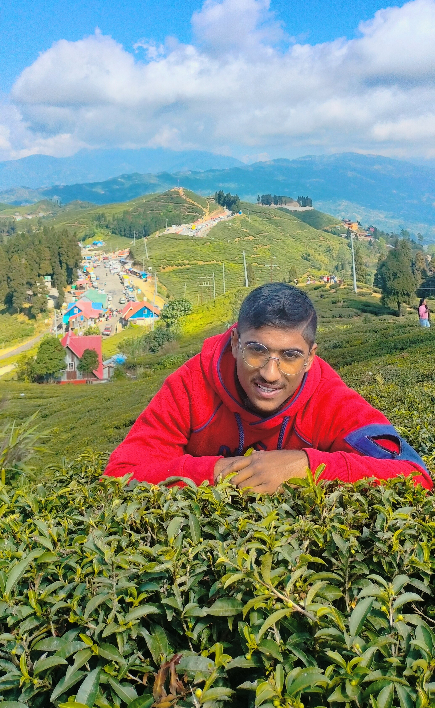

स्वागतम् ! स्वागतम् !! स्वागतम् !!!
Welcome! Welcome!! Welcome!!!
यो साइट बी.आर.पी. माइलोको साहित्यिक रचना प्रस्तुत गर्ने उद्देश्यले बनाइएको हो। यहाँ विभिन्न गजल, कविता, मुक्तक र अन्य साहित्यिक रचनाहरू हेर्न सकिन्छ। सबैजना साहित्यप्रेमी मनहरुले यो साइटमा भिजिट गरेर हेर्नुहोला ।
This site is intended to present B.R.P. Mailo's literary works. Various ghazals, poems, muktakas and other literary works can be seen here. All literature lovers should visit this site.
आफ्नो डायरी
---प्रेम आखिर प्रेम नै रहेछ , माया त बद्लिएर दया बन्नसक्छ ।
हिजो गिरे पनि नजरबाट, भोलि त्यहि प्रिया बन्न सक्छ ।✏️बिआरपी माइलो
यहाँ महान सहित्यकारहरुका चर्तित भनाईहरु समावेस गरिएका छन् ।
मुनामदन
--हातका मैला सुनका थैला, के गर्नु धनले?
साग र सिस्नु खाएको बेस आनन्दी मनले (मुनामदन)
यात्री
--कुन मन्दिरमा जान्छौ यात्री,कुन मन्दिर जाने हो?
कुन सामग्री पूजा गर्ने,साथ कसोरी जाने हो?✏️महाकवि लक्ष्मी प्रसाद देवकोटा
स्वर्ग र देवता
--सधैँको सुत्केरी पृथ्वीका,
गलेका कन्चट बसेका गाला खोक्रा कोखा सारामा
अश्रुसागर महासागर भरी भरी भै उर्लिरहेका✏️बालकृष्ण सम (शारदा पत्रिका २००४)
गौथलीको चिरबिरी
--म बस्ने कोठाकै दलिन-बिचमा गौथली बस्यो
पिटाएको तन्नाउपर मैला पनि खस्यो ।
मलाई त्यो देखि हृदय-बिच लग्योकिरकिरी
चरी बोल्यो मेरो मन सब बुझी त्यो चिरिबिरी✏️कविशिरोमणि लेखनाथ पौडेल (शारदा पत्रिका १९९२)
आमाको सपना
--आमा, त्यो आउछ र ?
हो बा, त्यो आउछ
त्यो बिहानको सूर्य झैँ उज्यालो छर्दै आउछ ✏️गोपालप्रसाद रिमाल
नानीबाबुहरुको सपना लेख
गोपाल दाइ !
त्यो आयो
त्यो हुरी भएर आयो
हामि पात भएर पछ्याइरहेछौ
आमाको सपना पुरा भयो
तर गोपाल दाइ !
त्यो हुरीले त....... ✏️छेत्रप्रताप अधिकारी
Best Gazals
यहाँ सबैले मन पराएका गजलहरु छन्
फूल सुगन्धले कि, रङ्गले सुन्दर छ ?
हेराइ न हो यो, आफ्नै ढङ्गले सुन्दर छ
तर बनाउनेहरुले फूल हेरेर रंग बनाए
हेर्नेहरु भन्छन फूलभन्दा रंग सुन्दर छ
प्रकृतिले बसन्तमा, फूलको वयान गरेपछि
भनौला फूल त आफ्नै, उमङ्गले सुन्दर छ
तिमीले कुरा फेरेपछि न, हो मैले मन फेरेको
नत्र त मेरो पनि मन, अचम्मले सुन्दर छ
✏️बिआरपी माइलो
लेखकका बारेमा
About the Author
लेखक
Author
लेखकको भनाइ
अहिलेको बिज्ञान र प्रविधिको युगमा कुनै अरु पुराना विकल्प भन्दा यो विकल्प अलिक फरक र उपयुक्त लाग्यो र यो साइट निर्माण गरेको छु ।
आफैमा विश्वास गर्छु कि यहि साइट मार्फत मेरा साहित्यिक रचनाहरु सम्पूर्ण पाठक वर्गमा पुर्याउने छु । लेख्न थालेको धेरै त भएको छैन । तर पनि प्रयास गरेको भने कक्षा ५ मा अध्ययन गर्दादेखि नै हो । सफल हुने सूत्रहरु त धेरै हुन्छन् । तर कस्तो सूत्र प्रयोग गरेर सफल हुने भनेर निर्णय गर्ने जिम्मा तपाईको हो ।
मेरो पनि त्यस्तै तपाईको जस्तै कथा छ ।
साहित्य मान्छेको जीवनको अभिन्न अङ्ग हो । मान्छेको जन्म संगै साहित्यको पनि जन्म हुन्छ । जन्म, मृत्यु, रोदन, हाँसखेल, दुख पिडा, हर्ष उल्लास, माया, ममता, संघर्ष, मिहिनेत, असफल, सफलता आदिको संयोजन नै वास्तबमा साहित्य हो । त्यसलाई बिभिन्न प्रकृयाद्वारा प्रस्तुत गरिन्छ ।
जीवनमा मान्छेहरु प्रयास गरेर थाक्ने गर्छन् । तर मलाई लाग्छ प्रयास भनेको थकानको जन्म हैन । प्रयासबाट त मानिसले जीवन खोजेका हुन्छन् । आफ्ना लक्ष्य, भविष्य, दुनियाँ, संसार र अनगिन्ति आशाको दीप खोजेका हुन्छन् ।
आगोको ज्वाला झैँ दनदन दन्किरहेको आशाका किरणहरु अझै चम्काउन खोजिरहेका हुन्छन् । हो ति सबै कुण्ठाहरू फुत्त बाहिर निकाल्नु पर्छ । जस्तो पर्याप्त श्रोत साधन भएर पनि उपयोग गर्न नजान्दा त्यो श्रोत भएको र नभएको कुनै फरक अर्थ हुदैन । त्यस्तै आफुमा भएको प्रतिभाआफैले प्रस्तुत गर्नु पर्दछ । नत्र कुनै अर्थ हुदैन ।
मैले यस्तै यस्तै कुराहरु समावेश गरेर यो साहित्यिक वेबसाइट तयार गरेको छु । यहाँ यस्तै तपाइको कथा लेखिएको छ । तपाइको समाजको, तपाइको बा आमाको, तपाईका असल छिमेकीको, तपाईका दुश्मनको, तपाईलाई माया गर्ने मान्छेको र तपाइले माया गर्ने मान्छे सबै सबैको कथा प्रस्तुत गरिएको छ ।
लेख्दा लेख्दै तपाइँ छुट्नु भएको, तपाइले चाहेको मान्छे छुटेको तथा तपाइको समाज छुटेको रहेछ भने आसा छ अवस्य मलाई जानकारी गराउनुहुनेछ ।
तपाईहरुको सुझाब र सल्लाहको ठुलो अपेक्षा गरेको छु । सधै भरि म तपाईहरु पाठक प्रति सचेत रहेको छु, र रही रहने बाचा गर्दछु। तपाइहरुले साहित्यलाई मन पराइदिंदा मात्र हैन पढेर गल्ति औल्दियाइदिदा पनि सारै खुसि लाग्छ ।यो तपाई पाठकवर्गले निभाउनुपर्ने एउटा कर्तव्य पनि हो जस्तो लाग्छ ।
तपाईका सुझावले अरु लेखनमा थप हौसला मिलोस् र लेख्दा लेख्दै तपाईहरुको सुझावले घच्घच्याई रहोस् । सुधारगर्ने मौका मिलिरहोस् । तपाइहरुले दिनुपर्ने पृष्ठपोषणको लागि यहि साईटको लेखकको सम्पर्कमा क्लिक गरि आफ्नो विवरण उल्लेख गरेर भन्न चाहेको कुरा लेखिदिनुहोला ।
जसले गर्दा मलाई पछाडिका दिनहरुमा नया रचनाहरु ल्याउन मद्दत मिल्नेछ । थप सल्लाहा र सुझाबको लागि हाम्रा अन्य सम्पर्कहरु:
Author's statement
In today's age of science and technology, this option is a bit different and suitable than any other old option and I have created this site. I believe in myself that through this site I will bring my literary works to the entire readership.
It has not been long since I started writing. However, I tried since I was studying in class 5. I look forward to your suggestions and advice. I have always been aware of you readers, I will be and I will be.Not only when you like literature, but also when you make mistakes by reading it, you feel very happy.
My hope is that I will be able to be close to more of you. May your suggestions encourage me to write more and be inspired by your suggestions while writing. Get a chance to improve. Please click on the contact of the author of this site and mention your details and write what you want to say. So that will help me to come up with new compositions in the days to come.
Our other contacts for further advice and suggestions:

गजलहरु
Gazals
यहाँ विभिन्न गजलहरू पढ्न सकिन्छ।
Here you can read various gazals.
- गजल १
बाढीले गाउँ बगायो, आमाको पुरानो घर बगायो ।
पहिरोले रोड, पुल,जग्गा जमिन नहर बगायो।
बाढी सबै सहेकै थिए, सहर डुबेको सुनेर खबर,
गाउँमा बाको आशा, भरोसा र रहर बगायो ।
छोरो बस्ने सहर डुबेपछि, रोएका हुन् बा आमा,
नत्र त पहिले नै रुँदारुँदै, बाढीले डर भर बगायो ।
बगाएर जग्गा जमिन, धन सम्पत्ति पुगेन अझै,
सबै सकेर पनि फेरि, आशाको धरोहर बगायो ।
आँसु सकिउनजेल रोएका छन्, बा आमा बेस्सरी,
बाढीले आँसु, धड्कन, मन हर-प्रहर बगायो । ✏️बिआरपी माइलो
- गजल २
कापी र कलम अनि प्रकृति चाहिन्छ
एकान्तमा बसेर लेख्न पनि आकृति चाहिन्छ
दुखि हुन्छौ नसोध एक्लै पारे एक्लै बनाए
एक्लै बनाउन पनि के तिम्रो स्विकृति चाहिन्छ
यहाँ नसोधी बनाउनेहरुले नै के के बनाइसके
तर जे बनाउन पनि अलिकिती बिकृति चाहिन्छ
स्पष्ट कुरासंग जोड्न तिर्मिर के ल्याउछौ
यहाँ भातमा दाल जोड्न पनि प्रिती चाहिन्छ
तिमि आफ्ना कुरा बोल्न चाहन्छौ लेखन चाहन्छु
तर यो बुझ यहाँ खान पनि संस्कृति चाहिन्छ
✏️बिआरपी माइलो
- Gazal 1
- गजल ३
खै कोनि के पाएनन् निक्कै खोकेकाछन्
यी बुढाले खोपडिमा के के बोकेकाछन्
घरी भन्छन् बूढो भएँ, घरी तन्नेरी छु ।।
गीता पढ्छु भन्दै सधैं, रक्सी धोकेकाछन् ।
बुझिसक्नु भए पो यिनका चालामाला
भक्त छक्क पर्छन् सबै, मन्त्र घोकेकाछन्
कहिँ पंडित बन्छन्, कहिँ मंदिर छुन्न भन्छन
हाँसो लाग्छ सम्झिँदा नि, आफ्नै जिब्रो टोकेकाछन्
✏️बिआरपी माइलो
- Gazal 2
- गजल ४ यी गरिब हुन् त्यसैले हराउन सकिन्छ ।
- Gazal 3
- गजल ५ सबै थोक छ तिमि भइनौ , प्रहर फेरियो ।
- गजल ६ तिमि साथ छु भन्छौ, सहारा लाग्छ
तिम्रै राज चल्छ रत कमाउन सकिन्छ ।
यहाँ न मुर्ख भन्न मिल्छ न सद्धे भन्नु मिल्छ ।
सहि कुरा गर्छन मात्र डराउन सकिन्छ ।
यस्ता थुप्रै देखेकोछु सत्य बोल्छन ।
तर पनि मात खायसी काम गराउन सकिन्छ ।
थोरै भय पनि आशा राखेको छु गर्लान केहि,
यो केहि नै भय पनि मन परौना सकिन्छ ।
✏️बिआरपी माइलो
हरायपछी त्याहबाट तिमि , सहर फेरियो ।
बरबादिका दिन चलेकाछन लाग्यो सुन्नुपर्छ ?
स्वप्निल पलमाझैँ सहजै घर फेरियो ।
किन एउटा मात्र आचल त्यो याद आउछ ।
बेखबर तिम्रो यादसंगै हरपल ,जहार फेरियो ।
कोकिल तिम्रो बचन नसुनेको कयौ दिन भएछ ।
कुण्ठा र संबेगले सदैब ,रहर फेरियो ।
हिस्स हासों बोकेको खुशी मुहारमा खैन के भयो।
भन्छा दुनियाले यसको दन्त लहर फेरियो ।
✏️बिआरपी माइलो
आजभोलि किन सबैं, आहारा लाग्छ।
तिमिन नहुदा त सबै सकिनुपर्ने,
तर पनि अझै आकाशमा तारा लाग्छ।
यति बुझेको छु बा,आमा तिमि संसार हौ ।
तर पनि खै किन अरु नै बिचरा लाग्छ।
याहा आशा दिलाउने र हराउनेको के कमि छ ।
सहयोग गर्नेलाई नै बल्लात्कारको नारा लाग्छ।
मन पनिं कस्तों हो मान्ने पर्छ यसलाई,
बिनाकारण तिमि नै सारा लाग्छ।
✏️बिआरपी माइलो
कविताहरु
Poems
यहाँ विभिन्न फुटकर कविताहरूको सङ्ग्रह छ ।
Here you can read various poems.
-
कविता
शीर्षक: पास्फोर्ट
मैले भविष्य देखेर देशमै
बनाए पास्फोर्ट र भरिदिए फर्म
नयाँ कक्षाको,
सबै जाँचको,
अनि थुप्रै थुप्रै आशाहरुको
तर पुर्याएनन् खै किन लक्षसम्म
बरु चढाईरह्यो कक्षा
र भुलाईरह्यो क्याम्पसतिरै
यो पास्फोर्टले
अनि
फेरि बनाए चिठीको पास्फोर्ट
र भरिदिए फर्म
तिम्रो यादको,
तिम्रो मायाको
अनि तिम्रै प्रेमको तर
अहँ यसले पनि पुर्याएन लक्षसम्म
बरु पुर्यायो तिम्रो मनसम्म
भर्खर पास्फोर्ट चिन्दैथिएँ र त
फेरि बनाएँ पास्फोर्ट र कन्फर्म गरिदिएँ
फेसबुकमा,
टिकटकमा,
अनि इन्स्ट्राग्राममा तर
यसले पनि लक्ष चिनाएन
बरु बिर्साइदियो आफ्नाहरुलाई पनि
र नाजिक्याईदियो को हो - को हो लाई
केहि क्षण भुलाइदियो कुराकानीमा
र फुत्त फालिदियो
दुश्मनको काखमा
मैले फेरी पास्फोर्ट बनाएँ
र पेस गरें जिमेलको, याहुको र टुइटरको हातमा
यो पनि काम लागेन
र रिसेट गरिदिएँ जिन्दगीमा
फेरी अर्को पास्फोर्ट बनाएँ
र पेसिदिएँ जागिरमा
यो पनि घुइचोले पेलिदियो
भित्रभित्रै हरायो बेपत्ता भयो,
नष्ट भयो र सबैबाट एक्लिदै गएँ
यसरी मैले अनगिन्ति पास्फोर्टहरु बनाएँ
अब एउटा पास्फोर्ट बनाउन मन छ,
जसले भविष्य पनि देखेको छ
आशा पनि देखेको छ,
प्रेम, आफन्त दुनियाँ सारा देखेको छ
यसले लक्षसम्म पुर्याउने,
बाटो पनि देखेको छ,
ति कठोर पत्थर फोड्ने,
हतियार पनि देखेको छ
हो अब यहि पास्फोर्ट बनाउदै छु
जसले एअरपोर्टसम्म पुर्याउने छ ।
✏️बिआरपी माइलो
कविता
शीर्षक: विद्यार्थीको प्रेम
म बसन्तमा रोइरहदा पनि, शिशिरमा हासेको छु ।
तिमीहरुको माया र स्नेहमा खुबै प्रिती गासेको छु ।
गर्व गर्छु पेशा मेरो, फरक नै छ अरु भन्दा,
खुलम्खुल्ला भन्न सकु, छैन मेरो गलत धन्दा,
मेरो नाम भन्दा पछी, एउटा सर जोडिएको छ ।
त्यो सरको भर फेरी, सब भन्दा धेर फैलिएको छ ।
मेरा प्यारा नानीबाबु, गर्नुहुन्न कुभलो केहि
यो त मेरो अर्ति तिम्लाई सधैँ असल बन्नु ।
तिम्ले दिएका प्रितहरु, संगालेर राखेकोछु ।
खेल्दै सिक्दै गरेका याद, संगालेर राखेको छु
मेरो प्रवेश तिम्रो लागि, उमङ्ग र शाहस बनोस् ।
कक्षा भरि सिकेका ति, सबै ज्ञान खास बनोस् ।
म नआउदा एक दिन, धेरै मलाई खोजेऊ अरे,
त्यहि दिन घरमा गइ, मेरै नाम रोजेउ अरे ।
तिमीहरुकै यो प्रेमले, सबै दुख भुलेकोछ,
शिशिरमा पनि साच्चै ढकमक्क फूलेकोछु ।
✏️बिआरपी माइलो
- Poem 1
- कविता
शीर्षक: तिमि !
कस्तो शब्द बनेछ ?
तिमि
अलि सस्तो शब्द बनेछ
रहर जस्तो शब्द बनेछ तिमि
तिमि त हरपल आउने शब्द बनेछ
न कुनै मोडमा भुलिन्छौ
न कुनै जोडमा भुलिन्छौ
तिमि मुखैमा झुन्डीएकी झैँ
खाने बेलाको ओठमा भुलिन्छौ
ठूलो रहरमा पर्ने तिमि
कस्तो शब्द बनेछ ?
रहर जस्तो शब्द बनेछ तिमि !!
तिमि त हरपल आउने शब्द बनेछ
तिमि त हरपल आउने शब्द बनेछ !! ✏️बिआरपी माइलो - Poem 2
- कविता
शीर्षक: लेखक
लेखकको त्यो सफा कोठा कागज भरिएको
कोठाभरि जताततै कलम छरिएको
हातभरि कलम छन् अनेक रंगहरुका
लेख्दा लेख्दै खीइसके टोप्रा नङहरुका
लेखक कोहिको आश गर्दैनन् लेख्छन असल कुरा
थालेको त्यो सुरुवाती गर्छन सधै पुरा
जिम्मेवारी पुरा गर्छ सधै काध थापी
बिना लोभ लालच आफ्नो कृतिहरु छापी
मुक्तकहरु
Muktaks
यहाँ विभिन्न मुक्तकहरू पढ्न सकिन्छ।
Here you can read various muktaks.
- मुक्तक १
गुमेपछि सानो आसा खिन्न भयो रे
गोरेटोमा पनि खुट्टा हिड्न भयो रे
मनमा थोरै उमंग र हर्ष पनि छायो भने
दुनियामा उसकै सान भिन्न भयो रे ✏️बिआरपी माइलो - Muktak 1
- मुक्तक २
सिकेको र सिकाएको कुन गजव छ ?
राखेको अनि झिकाएको कुन गजव छ ?
यहाँ बिर्सनेहरुलाई सम्झने पनि छन्
तर बिर्सनु र सम्झनु कुन गजब छ ✏️बिआरपी माइलो - Muktak 2
- मुक्तक ३
हार्नु भन्दा ठूलो जित के देखेको छौ
दुनियाँ कै लागि, रमित के देखेको छौ
खसेपछि तिमि तल गाउछान सबै गीत
यो भन्दा मिठो सङ्गीत के देखेको छौ ✏️बिआरपी माइलो - Muktak 3
- मुक्तक ४
धर्म गर्ने एक भिक्षुक, उनै बबाजिलाई भेट्नु
संघर्ष बुझ्न अपरिचित कुनै काजीलाई भेट्नु
नदी पार गर्दिन्छन त्यो चाँहि सत्य मान्नु पर्छ
हो त्यस्तै खोज्न जानुस् माझीलाई भेट्नु ✏️बिआरपी माइलो - Muktak 4
- मुक्तक ५
आफ्नासंगै दुश्मन बनि, जिउने कति हो
आफै आफ्नो मन मारी, पिउने कति हो
बरु ढुक्क पिए हुन्छ, टन्न तिर्खा मरुन्जेल
पिउने मन हुँदाहुँदै मुख, सिउने कति हो ✏️बिआरपी माइलो - Muktak 5
वेब डिजाइनर
Web Designer
मैले यो वेब पेज आफ्नो लागि पहिलो पटक बनाएको छु । तपाईहरु पनि कम्पुटर सिक्न चाहनुहुन्छ, यस्तै कम्प्युटरको ज्ञानको लिन चाहनुहुन्छ र म भविष्यमा वेब बनाएर आफ्नो डेटा सुरक्षित राख्न चाहन्छु भन्ने लाग्छ भने तलको लिंकमा क्लिक गरि Hamro Computer Guru युटुब च्यानललाई सब्स्क्राइब गरि जोडिनु होला म त्यहाँ
तपाइहरुलाई कम्प्युटर सम्बन्धित सबै ज्ञान दिने प्रयत्न गर्नेछु ।
धन्यवाद !
I have created this web page for myself for the first time. If you also want to learn computer, want to get knowledge of computer and I want to protect your data by creating a web in the future, then please click on the link below and subscribe to Hamro Computer Guru YouTube channel, I will try to give you all the knowledge related to computer there. Thank you!
लेखकको सम्पर्क
Contact the Author